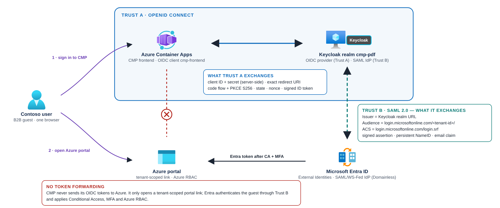

How CMP, Keycloak and Entra ID connect
End-to-end flows for both trusts, the identifiers each system sees, and how sessions behave — with the code that enforces each decision.
Two trusts, one browser#


| Trust A — CMP ⇄ Keycloak | Trust B — Entra ⇄ Keycloak | |
|---|---|---|
| Purpose | Authenticate the person to CMP | Authenticate the B2B guest to Contoso's Entra tenant |
| Configured in | Keycloak client cmp-frontend + CMP environment | Keycloak SAML client + Entra External Identities (Domainless IdP) |
| Secret material | Client secret in Key Vault; PKCE verifier per login | None shared; Entra trusts Keycloak's public signing certificate |
| Verified by | CMP validates issuer, signature, state, nonce, PKCE | Entra validates signature, issuer, audience, recipient, time window |
| Proven in PoC | Yes | Not yet end-to-end |
Flow A — signing in to CMP (OIDC)#
async start(session) {
const verifier = provider.randomPKCECodeVerifier();
session.oidc = {
verifier, state: provider.randomState(), nonce: provider.randomNonce(), createdAt: Date.now()
};
return provider.buildAuthorizationUrl(client, {
redirect_uri: `${config.origin}/auth/callback`, scope: 'openid profile email',
response_type: 'code', code_challenge: await provider.calculatePKCECodeChallenge(verifier),
code_challenge_method: 'S256', state: session.oidc.state, nonce: session.oidc.nonce
});
},
Flow B — opening the Azure portal as a guest (SAML)#
Flow B is drawn from Microsoft's documented behaviour for SAML/WS-Fed federation, Domainless routing, Conditional Access for external users and mandatory MFA (Domainless, Authentication & CA, Mandatory MFA). It has not yet been observed end-to-end in the PoC. G8 lists the captures that will prove or correct each step.
Identity correlation#
| Identifier | Issued by | Seen by | Stable? | Used for |
|---|---|---|---|---|
Keycloak user ID (sub) | Keycloak | CMP (ID token) | Yes, per realm | CMP project membership (with exact issuer) |
| Persistent NameID | Keycloak (per SAML client) | Entra | Yes, per client | Entra's link between the external IdP identity and the guest |
emailaddress claim | Keycloak (user email) | Entra | Can change | Required by Entra; Domainless skips domain matching |
| Guest object ID | Entra | Azure RBAC, CMP catalog | Yes | Role assignments; CMP's entraObjectId binding |
CMP never infers one identifier from another. The operator-approved catalog binds them explicitly:
[
{
"id": "aaaa0a0a-bb1b-cc2c-dd3d-eeeeee4e4e4e",
"name": "CMP PoC subscription",
"organization": "Contoso",
"tenantId": "aaaabbbb-0000-cccc-1111-dddd2222eeee",
"memberships": [
{ "subject": "11bb11bb-cc22-dd33-ee44-55ff55ff55ff", "role": "VIEW", "entraObjectId": "00aa00aa-bb11-cc22-dd33-44ee44ee44ee" }
]
}
]
export function assignedProjects(config, identity) {
if (typeof config.issuer !== 'string' || identity?.issuer !== config.issuer || typeof identity?.sub !== 'string') return [];
return (config.projects || []).flatMap(project => {
const membership = project.memberships.find(member => member.subject === identity.sub);
return membership ? [{
id: project.id, name: project.name, organization: project.organization, tenantId: project.tenantId,
role: membership.role, portalPath: `/portal/${project.id}`
}] : [];
});
}
export function projectPortalUrl(project) {
if (!project || typeof project.id !== 'string' || !objectIdPattern.test(project.id) ||
typeof project.tenantId !== 'string' || !objectIdPattern.test(project.tenantId)) {
throw new Error('Invalid project subscription or tenant identifier');
}
return `https://portal.azure.com/#@${project.tenantId.toLowerCase()}/resource/subscriptions/${project.id.toLowerCase()}/overview`;
}
Sessions and sign-out#
| Session | Lives in | Lifetime in PoC | Ended by CMP sign-out? |
|---|---|---|---|
| CMP session | Server-side store (PostgreSQL), HttpOnly cookie | 8 hours | Yes |
| Keycloak SSO session | Keycloak (cookie + DB) | Realm defaults | No |
| Entra session | Microsoft Entra | Entra/CA policy | No |
| Azure portal session | Azure portal | Portal + CA policy | No |
If the Entra session ends while the Keycloak session is still valid, the guest experiences SSO at Keycloak and returns to Entra without a password prompt — Microsoft documents this behaviour for federated IdPs (Learn: session expiration). MFA and CA still apply on the Entra side.
There is no global logout across CMP, Keycloak, Entra and the portal in this design. For production, decide whether you need back-channel logout, shorter sessions and an incident revocation runbook (disable the Keycloak user, revoke Keycloak sessions, block or remove the guest, revoke Entra sessions).